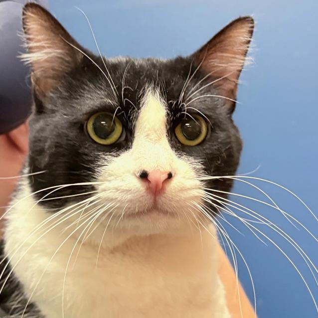
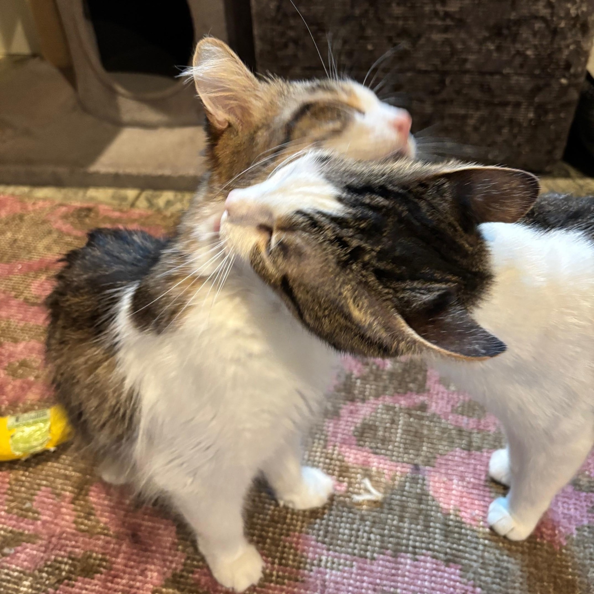
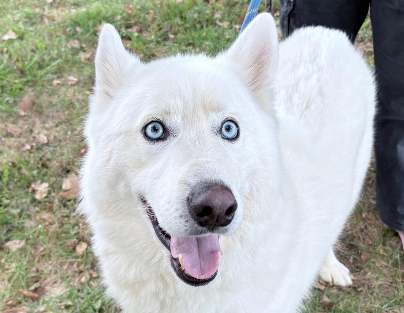

White spotting works similarly in dogs and cats. A cat or a dog(or literally anything) can have up to 2 white spotting genes.
Both in cats and dogs, 1 copy of the white spotting gene results in generally less than 50% white animal, and 2 copies results in more than 50% white.
White spotting is also called pied or piebaldism!
Here are some example of cats and dogs with white spotting! (click on the images of animals to go to their adoption page!)
 
White spotting is completely different from ALL white dogs and cats.
The gene for “all white” in cats is dominant, which means one parent must have the gene(in other words, be completely white) in order for 50% of their offspring to be completely white.
Dominant white can cause some cats to have blue eyes, which are linked to deafness. About 70% of all white cats with blue eyes have deafness in one or both ears.
The blue eyes don't cause deafness, but rather blue eyes are a sign of pigment not reaching the internal organs. But do not worry! This gene is not dangerous, most all white cats are generally healthy and just as cute as their non-white counterparts.
In short, all white dogs… aren’t white. They're actually ginger.
In dogs, ginger(yes, dogs can be redheads) is a spectrum, kind of like skin color in humans.
Ginger dogs can come in a range of colors, from very rich dark orange of an Irish setter to purely white like a Samoyed.
Here are some examples of "white" dogs!
Reference pictures courtesy of doggenetics.co.uk
Images of animals courtesy of Columbus Animal Care Servies and Kat Dunn Photography